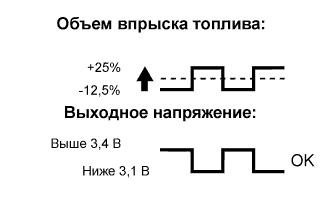
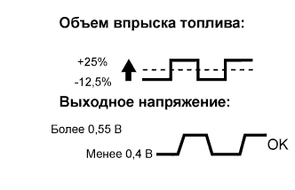
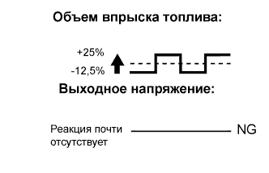

DTC P2195 Сигнал кислородного датчика (A/F) постоянно указывает на обеднение смеси (датчик 1 ряда 1) |
DTC P2196 Сигнал кислородного датчика (A/F) постоянно указывает на обогащение смеси (датчик 1 ряда 1) |
| № DTC | Условие обнаружения DTC | Неисправный участок |
| P2195 | Условия (a) и (b) сохраняются в течение не менее 10 с (логика диагностирования за 2 поездки): (a) Напряжение датчика состава топливовоздушной смеси превышает 3,8 В. (b) Напряжение подогреваемого кислородного датчика превышает 0,21 В. |
|
| Во время отсечки топлива (при замедлении автомобиля) ток датчика состава топливовоздушной смеси составляет не менее 3,6 мА (логика диагностирования за 2 поездки). |
| |
| P2196 | Условия (a) и (b) сохраняются в течение не менее 10 с (логика диагностирования за 2 поездки): (a) Напряжение датчика состава топливовоздушной смеси менее 2,8 В в течение 10 с. (b) Напряжение подогреваемого кислородного датчика менее 0,6 В. |
|
| Во время отсечки топлива (при замедлении автомобиля) ток датчика состава топливовоздушной смеси составляет менее 0,78 мА (логика диагностирования за 2 поездки). |
|
| Информация на дисплее прибора (датчик) | Объем впрыска топлива | Состояние | Напряжение |
| AFS Voltage B1S1 (датчик состава топливовоздушной смеси) | +25% | Обогащение | Менее 3,1 В |
| -12,5% | Обеднение | Более 3,4 В | |
| O2S B1S2 (подогреваемый кислородный датчик) | +25% | Обогащение | Более 0,55 В |
| -12,5% | Обеднение | Менее 0,4 В |
| Корпус | Датчик состава топливовоздушной смеси Выходное напряжение | Подогреваемый кислородный датчик Выходное напряжение | Наиболее вероятное место нахождения неисправности |
| 1 |  |  | - |
| 2 |  |
| |
| 3 |
| ||
| 4 |
|
| 1.ПРОВЕРЬТЕ, ВЫВОДЯТСЯ ЛИ ДРУГИЕ DTC (ПОМИМО DTC P2195 И P2196) |
Подсоедините портативный диагностический прибор к DLC3.
Установите замок зажигания в положение ON (ВКЛ).
Включите портативный диагностический прибор.
Войдите в следующие меню: Powertrain / Engine and ECT / DTC.
Считайте коды DTC.
| Результат | Перейти к |
| Выводится код P2195 или P2196 | А |
| Выводятся коды P2195 или P2196 и другие DTC | B |
|
| ||||
| А | |
| 2.СНИМИТЕ ПОКАЗАНИЯ ПОРТАТИВНОГО ДИАГНОСТИЧЕСКОГО ПРИБОРА (ВЫХОДНОЕ НАПРЯЖЕНИЕ ДАТЧИКА СОСТАВА ТОПЛИВОЗДУШНОЙ СМЕСИ) |
Подсоедините портативный диагностический прибор к DLC3.
Установите замок зажигания в положение ON (ВКЛ).
Включите портативный диагностический прибор.
Сбросьте коды DTC (Нажмите здесь).
Совершите проверочную поездку в порядке, рассмотренном в разделе "Поездка в проверочном режиме".
Войдите в следующие меню: Powertrain / Engine and ECT / Utility / Monitor Status.
Убедитесь, что для параметра "O2 Sensor" отображается состояние "Complete" (завершено).
Если состояние "Incomplete" (не завершено), совершите проверочную поездку еще раз.
Войдите в следующие меню: Powertrain / Engine and ECT / Data List / AFS Current B1S1.
Проверьте значение выходного тока датчика состава топливовоздушной смеси во время испытания прекращения подачи топлива (см. "Схема проверочной поездки 2" [подробное описание шагов с "С" по "F"] в разделе "ПОЕЗДКА В ПРОВЕРОЧНОМ РЕЖИМЕ").
| Значение по испытанию | Следующий шаг |
| В пределах номинального диапазона (выше 1,0 мA, но менее 3,6 мA) | А |
| За пределами номинального диапазона (менее 1,0 мA или не менее 3,6 мA) | B |
|
| ||||
| А | |
| 3.СНИМИТЕ ПОКАЗАНИЯ ПОРТАТИВНОГО ДИАГНОСТИЧЕСКОГО ПРИБОРА (ВЫХОДНОЕ НАПРЯЖЕНИЕ ДАТЧИКА СОСТАВА ТОПЛИВОЗДУШНОЙ СМЕСИ) |
Подсоедините портативный диагностический прибор к DLC3.
Запустите двигатель.
Включите портативный диагностический прибор.
Прогрейте датчик состава топливовоздушной смеси при частоте вращения коленчатого вала двигателя 2500 об/мин в течение примерно 90 секунд.
Войдите в следующие меню: Powertrain / Engine and ECT / Data List / AFS Voltage B1S1 and Engine Speed / Function / Snap Shot Record.
Измерьте напряжение датчика состава топливовоздушной смеси 3 раза в каждом из следующих состояний:
При работе двигателя на холостом ходу (в течение не менее 30 с) (шаг "A").
При работе двигателя с частотой вращения коленчатого вала примерно 2500 об/мин (без резких изменений частоты вращения коленчатого вала) (шаг "B").
После повышения частоты вращения коленчатого вала двигателя до 4000 об/мин и последующего быстрого отпускания педали с тем, чтобы дроссельная заслонка полностью закрылась (шаг "C").
| Условие | Колебания напряжения датчика A/F | Для справки |
| Шаги "A" и "B" | Не изменяется при приблизительно 3,3 В | От 3,1 В до 3,5 В |
| Шаг "C" | Увеличивается до 3,8 В или более | Изменение происходит при замедлении двигателя (в случае отсечки топлива) |
|
| ||||
| OK | |
| 4.ВЫПОЛНИТЕ ПОЕЗДКУ В ПРОВЕРОЧНОМ РЕЖИМЕ |
Подсоедините портативный диагностический прибор к DLC3.
Установите замок зажигания в положение ON (ВКЛ).
Включите портативный диагностический прибор.
Удалите коды DTC (Нажмите здесь).
Выключите зажигание и подождите не менее 30 секунд.
Включите зажигание и портативный диагностический прибор.
Запустите и прогрейте двигатель.
Совершите проверочную поездку в порядке, рассмотренном в разделе "Поездка в проверочном режиме".
| ДАЛЕЕ | |
| 5.ПРОВЕРЬТЕ, ВОЗОБНОВЛЯЕТСЯ ЛИ ВЫВОД DTC (DTC P2195 ИЛИ P2196) |
Войдите в следующие меню: Powertrain / Engine and ECT / Utility / All Readiness.
Введите DTC: P2195 или P2196.
Проверьте результат проверки DTC.
| Результат | Перейти к |
| ABNORMAL (DTC P2195, P2196, P2197 или P2198 выводится) | А |
| NORMAL (DTC не выводится) | B |
|
| ||||
| А | |
| 6.ЗАМЕНИТЕ ДАТЧИК СОСТАВА ТОПЛИВОВОЗДУШНОЙ СМЕСИ |
Замените датчик состава топливовоздушной смеси (Нажмите здесь).
| ДАЛЕЕ | |
| 7.ВЫПОЛНИТЕ ПОЕЗДКУ В ПРОВЕРОЧНОМ РЕЖИМЕ |
Подсоедините портативный диагностический прибор к DLC3.
Установите замок зажигания в положение ON (ВКЛ).
Включите портативный диагностический прибор.
Удалите коды DTC (Нажмите здесь).
Выключите зажигание и подождите не менее 30 секунд.
Включите зажигание и портативный диагностический прибор.
Запустите и прогрейте двигатель.
Совершите проверочную поездку в порядке, рассмотренном в разделе "Поездка в проверочном режиме".
| ДАЛЕЕ | |
| 8.ПРОВЕРЬТЕ, ВОЗОБНОВЛЯЕТСЯ ЛИ ВЫВОД DTC (DTC P2195 ИЛИ P2196) |
Войдите в следующие меню: Powertrain / Engine and ECT / Utility / All Readiness.
Введите DTC: P2195 или P2196.
Проверьте результат проверки DTC.
| Результат | Перейти к |
| ABNORMAL (DTC P2195, P2196, P2197 или P2198 выводится) | А |
| NORMAL (DTC не выводится) | B |
|
| ||||
| А | ||
| ||
| 9.ПРОВЕРЬТЕ, НЕ ВЫРАБОТАЛ ЛИ АВТОМОБИЛЬ ТОПЛИВО |
Вырабатывалось ли топливо ранее?
|
| ||||
| ДА | ||
| ||
| 10.ПРОВЕРЬТЕ ДАТЧИК СООТНОШЕНИЯ ВОЗДУХ-ТОПЛИВО (СОПРОТИВЛЕНИЕ ПОДОГРЕВАТЕЛЯ) |
Проверьте датчик состава топливовоздушной смеси (Нажмите здесь).
|
| ||||
| OK | |
| 11.ПРОВЕРЬТЕ ЖГУТ ПРОВОДОВ И РАЗЪЕМ (ДАТЧИК СОСТАВА ТОПЛИВОВОЗДУШНОЙ СМЕСИ – ECM) |
Отсоедините разъем датчика состава топливовоздушной смеси.
Отсоедините разъем ЭБУ.
Измерьте напряжение в соответствии со значениями, приведенными в таблице.
| Контакты для подключения диагностического прибора | Условие | Заданные условия |
| C56-2 (+B) - масса | Зажигание включено | 11-14 В |
Измерьте сопротивление в соответствии со значениями, приведенными в таблице ниже.
| Подключение диагностического прибора | Условие | Заданные условия |
| C56-1 (HA1A) - C63-6 (HA1A) | Всегда | Менее 1 Ом |
| C56-3 (A1A+) - C63-7 (A1A+) | Всегда | Менее 1 Ом |
| C56-4 (A1A-) - C63-1 (A1A-) | Всегда | Менее 1 Ом |
| Подключение диагностического прибора | Условие | Заданные условия |
| C56-1 (HA1A) или C63-6 (HA1A) - масса | Всегда | 10 кОм или более |
| C56-3 (A1A+) или C63-7 (A1A+) - масса | Всегда | 10 кОм или более |
| C56-4 (A1A-) или C63-1 (A1A-) - масса | Всегда | 10 кОм или более |
Подсоедините разъем ECM.
Подсоедините разъем датчика состава топливовоздушной смеси.
|
| ||||
| OK | |
| 12.ПРОВЕРЬТЕ СИСТЕМУ ВПУСКА |
Проверьте систему впуска на наличие утечек вакуума.
|
| ||||
| OK | |
| 13.ПРОВЕРЬТЕ ДАВЛЕНИЕ В ТОПЛИВНОЙ СИСТЕМЕ |
Проверьте давление в топливной системе (Нажмите здесь).
|
| ||||
| OK | |
| 14.ПРОВЕРЬТЕ ТОПЛИВНУЮ ФОРСУНКУ В СБОРЕ |
Проверьте объем впрыска (оцените объем впрыска топлива и проверьте схему впрыска) (Нажмите здесь).
|
| ||||
| OK | |
| 15.ЗАМЕНИТЕ ДАТЧИК СОСТАВА ТОПЛИВОВОЗДУШНОЙ СМЕСИ |
Замените датчик состава топливовоздушной смеси (Нажмите здесь).
| ДАЛЕЕ | |
| 16.ВЫПОЛНИТЕ ПОЕЗДКУ В ПРОВЕРОЧНОМ РЕЖИМЕ |
Подсоедините портативный диагностический прибор к DLC3.
Установите замок зажигания в положение ON (ВКЛ).
Включите портативный диагностический прибор.
Удалите коды DTC (Нажмите здесь).
Выключите зажигание и подождите не менее 30 секунд.
Включите зажигание и портативный диагностический прибор.
Запустите и прогрейте двигатель.
Совершите проверочную поездку в порядке, рассмотренном в разделе "Поездка в проверочном режиме".
| ДАЛЕЕ | |
| 17.ПРОВЕРЬТЕ, ВОЗОБНОВЛЯЕТСЯ ЛИ ВЫВОД DTC (DTC P2195 ИЛИ P2196) |
Войдите в следующие меню: Powertrain / Engine and ECT / Utility / All Readiness.
Введите DTC: P2195 или P2196.
Проверьте результат проверки DTC.
| Результат | Перейти к |
| ABNORMAL (DTC P2195, P2196, P2197 или P2198 выводится) | А |
| NORMAL (DTC не выводится) | B |
|
| ||||
| А | ||
| ||